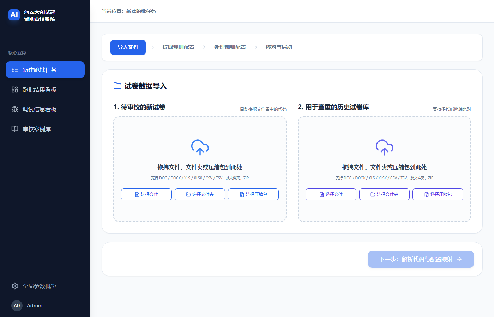
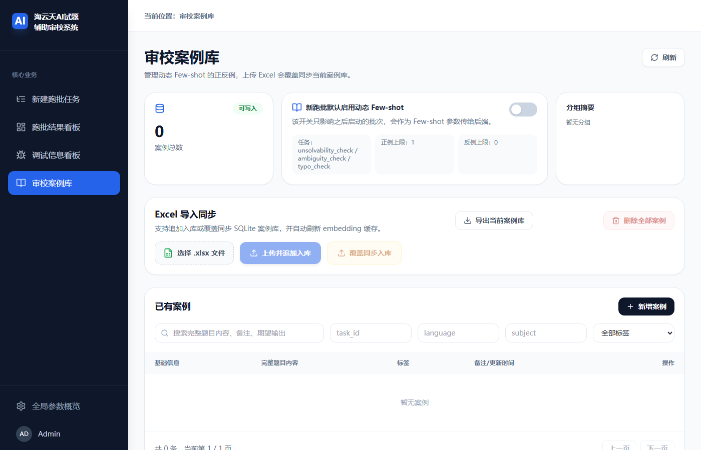

⚙️ 多语言试卷审校 Agent
exam_checker_agent — 自动拆题 + 逐题路由检测 + 四段式图文一致性审校 + 三类查重 + 可量化评测；生产级批处理重构版本
项目概览
本项目是 exam_smart_checker 的生产级重构版本，将单机 Streamlit 工具升级为支持多用户并发、
任务批量管理的 Web 平台。核心能力：试卷批次管理、任务调度、5 步自动化审校流水线、结果下载。
技术栈
架构与模块结构
核心目录：
backend/app/routers/— FastAPI 路由层backend/app/services/— 业务逻辑服务层backend/app/repositories/— 数据访问层（SQLite）backend/app/domain/— 任务状态机定义backend/api_server.py— 遗留 Flask 服务（WSGI in-process）frontend/— React 前端run.py— 统一启动入口，port 8777Dockerfile/deploy.sh
核心算法 / 关键设计
1. 双 Web 框架 WSGI In-Process 融合
FastAPI 作为主服务，通过 LegacySmartCheckerService.dispatch() 将
/api/v1/* 路由在进程内转发给 Flask WSGI 应用处理，
实现在不重写遗留逻辑的前提下完成平滑迁移，零额外网络跳跃。
2. 5 步任务状态机
每个审校任务经历 5 个串行阶段：
parse → review → internal_plag → cross_plag → history_plag，
每步完成后更新状态，支持断点恢复。状态机使用乐观锁防止并发竞争，
心跳机制自动检测并恢复僵尸任务（超时未心跳的运行中任务）。
3. AppRuntime 依赖注入容器
统一的 AppRuntime 单例管理所有服务实例的生命周期，
FastAPI 依赖注入系统通过它获取 Repository、Service 等组件，避免全局变量。
4. X-Client-Id 多租户隔离
每个请求通过 Header X-Client-Id 携带客户端标识，
任务查询、结果读取均在对应客户端 owner 范围内隔离，
防止多机构数据交叉。
5. 多语言检测提示词动态选择
语言检测模块识别试卷语言（中/日/德/法），动态加载对应的 LLM 审校提示词， 实现同一套系统的多语言适配。
创新点 / 我做了什么
- 设计整体批处理平台架构（FastAPI + SQLite + React 全栈）
- 实现 FastAPI ↔ Flask WSGI in-process 融合方案，保留遗留能力零迁移成本
- 设计 5 步任务状态机 + 乐观锁 + 心跳僵尸恢复机制
- 构建
AppRuntimeDI 容器，统一管理服务生命周期 - 实现
X-Client-Idper-client 数据隔离 - 编写 Docker 镜像与一键部署脚本
端到端流程
一份文档进来，依次经过六个节点；Excel/zip 评测集走「解析 → 检测 → 评测」短主线。
★ 图片审校：四段式多模态链路
图文一致性（图里标的值和题干说的不一样、或配错了别题的图）是审校最难、最有价值的部分。 多模态模型常「看图说话很流畅、却对图中关键锚点视而不见」。为此设计了一条四段式链路：
Agent 还是工作流？（诚实剖析）
它是一条确定性多阶段流水线，里面嵌了两个受约束的 LLM 决策点：
- 路由：每题判定跑哪些检测（输出布尔开关，缺键即视为 false 的 fail-closed 设计）。
- 错误聚合：对一道题的多条报错决定
keep / merge / delete（锁死 error_type，失败回退不丢错）。
LLM 不驱动控制流分支、不自我重规划。设计哲学是「能用可复现规则的地方就用规则，只有需要语义理解处才交给 LLM，并把 LLM 输出空间约束到最小」——这正是它「稳」的原因，也是它当前「不那么 agentic」的取舍。面试中会把它诚实定位为「带 LLM 决策点的可靠工作流」，并给出向真 agent 演进的路线。
错误类别与 Prompt 工程
20 个检测任务 / 4 语言（中 10、日 4、德 3、法 3）。UI 上一个「错别字」勾选自动展开 4 语言任务， 统一错误类型映射解耦「展示口径（10 类）」与「执行任务（20 个）」。
检测 Prompt 有稳定解剖结构：角色（只检测不解题）→ 输入说明（reference 只读）→ 核心目标 → 严格禁止 → 工作流程（含 ≥0.7 置信度门槛）→ 样例 → 严重度规则 → 锁死 error_type，所有任务复用同一份固定 JSON 输出模板（think/reason/errors[...]，含 anchor_text 用于在 Word 中唯一定位）。人工复核可沉淀为动态 Few-shot，按向量相似度召回注入后续检测。
量化指标与韧性
效果截图


